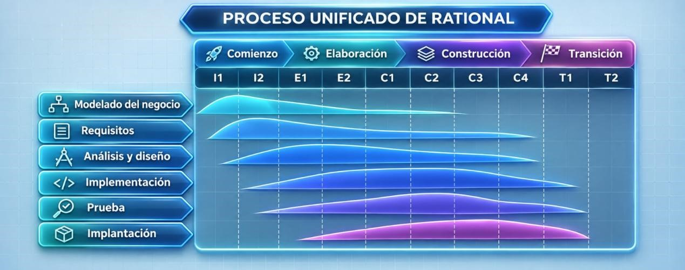
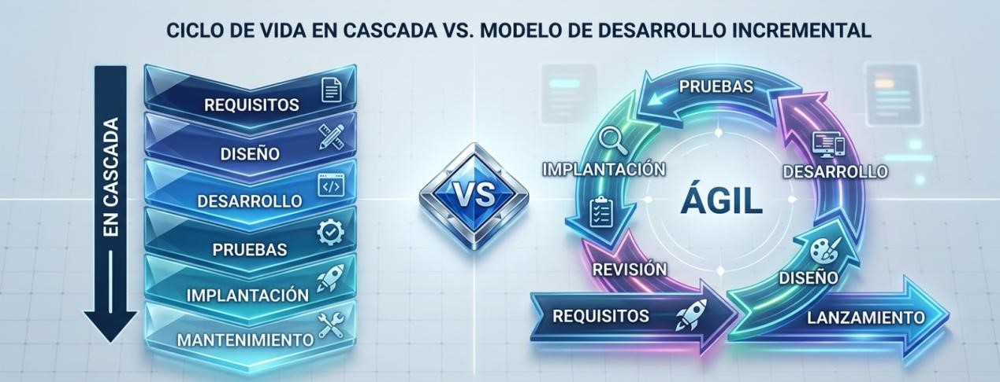

Entornos de Desarrollo
Herramientas de optimización, control de versiones, refactorización y pruebas de software.
Ingeniería del Software
Su definición propuesta por Pressman aclara que el software no es solo un programa que funciona sino que también comprende las estructuras de datos sobre las que opera el programa.
Sus problemas fundamentales eran:
- La planificación y estimación de costes eran frecuentemente muy imprecisas
- La productividad de quienes desarrollaban el software no se correspondía con la demanda de sus servicios
- La calidad del software no llegaba a veces a ser ni adecuada
La definición que propuso Fitz Bauer para la ingeniería del software es: “El establecimiento y uso de principios de ingeniería para llegar a un obtener un software rentable, que sea fiable y que funcione eficientemente en máquinas reales.”
Esto implica varios aspectos:
- Rentable: el coste de desarrollo y mantenimiento debe ser adecuado y no superar los beneficios o necesidades del proyecto.
- Fiable: el programa debe funcionar correctamente, ofrecer resultados esperados y evitar errores o fallos frecuentes.
- Eficiente: debe aprovechar bien los recursos del ordenador, como la memoria, el procesador y el almacenamiento, sin consumir más de lo necesario.
- Mantenible: debe permitir realizar modificaciones, corregir errores y añadir nuevas funciones sin tener que desarrollar todo el programa desde cero.
Tipo Test Ingeniería del Software
1. ¿Cuál es el objetivo principal de la ingeniería del software?
2. ¿Qué fase del desarrollo de una aplicación informática consiste en comprobar que funciona correctamente y detectar errores?
Fases de desarrollo de una aplicación informática
- Análisis
- Diseño
- Programación
- Comentarios: Explican partes del código para facilitar su comprensión.
- Declaraciones: Permiten definir variables, constantes y otros elementos que utilizará el programa.
- Nombres: Deben ser claros y representar la función de las variables, métodos y demás elementos.
- Líneas en blanco: Se utilizan para separar bloques de código y facilitar su lectura.
- Sangrados: Son espacios al principio de las líneas que ayudan a organizar visualmente el código y distinguir los bloques.
- Pruebas
Es la primera fase del desarrollo de una aplicación. Consiste en estudiar el problema que se quiere resolver y conocer las necesidades del cliente o usuario.
En esta fase se recopila información, se identifican los requisitos que debe cumplir el programa y se determina qué funciones tendrá. También se estudia la viabilidad del proyecto, teniendo en cuenta el tiempo, el presupuesto y los recursos disponibles.
Objetivo: Saber qué se necesita y qué debe hacer la aplicación.
En esta fase se decide cómo se va a desarrollar la aplicación. Se establece su estructura, los componentes que tendrá, cómo se organizarán los datos y cómo será la interfaz que utilizará el usuario. También se planifica la base de datos y el funcionamiento de cada parte del programa.
Consiste en desarrollar la aplicación utilizando lenguajes de programación. Los programadores escriben el código necesario para convertir el diseño en un programa real, creando las funciones y conectando los diferentes componentes para que todo funcione correctamente.
Consiste en comprobar que la aplicación funciona correctamente y cumple los requisitos establecidos. Se realizan diferentes pruebas para detectar errores, comprobar que todas las funciones trabajan como deberían y corregir los fallos encontrados. También se verifica que la aplicación sea fiable y esté preparada para utilizarse.

Tipo Test Fases de desarrollo
1. ¿Cuál es la primera fase del desarrollo de una aplicación informática?
2. ¿Qué se realiza principalmente durante la fase de análisis?
3. ¿Cuál es el objetivo principal de la fase de diseño?
4. ¿En qué fase se utilizan lenguajes de programación para desarrollar la aplicación?
5. ¿Para qué sirven los comentarios dentro del código?
6. ¿Qué son los sangrados en programación?
7. ¿Qué se pretende conseguir con la fase de pruebas?
8. ¿Cuál es el orden correcto de las cuatro fases principales?
Perfiles que intervienen en el desarrollo
Dado que el desarrollo de software se puede dividir en distintas tareas, es habitual contar con una persona experta para cada una de ellas, lo que hace que existan diferentes roles:
- Jefe de Proyecto: Se encarga de organizar y coordinar el proyecto, repartir las tareas entre los miembros del equipo y controlar los plazos, los costes y los recursos disponibles.
- Expertos del dominio: Son personas que conocen bien el sector o el problema para el que se desarrolla la aplicación. Aportan información y conocimientos para que el software responda a las necesidades reales de los usuarios.
- Analista: Estudia las necesidades del cliente y define los requisitos que debe cumplir la aplicación. Se encarga de determinar qué debe hacer el sistema.
- Arquitecto: Define la estructura general de la aplicación y decide cómo se organizan sus componentes y cómo se relacionan entre sí. También selecciona las tecnologías y soluciones técnicas más adecuadas.
- Diseñador: Establece cómo se construyen los distintos elementos de la aplicación a partir de la arquitectura definida. Diseña los componentes, las interfaces y los detalles de su funcionamiento.
- Programador: Escribe el código fuente de la aplicación utilizando los lenguajes de programación adecuados. También corrige errores y realiza modificaciones para que el software funcione correctamente.
- Probador: Se encarga de comprobar que la aplicación funciona como se espera. Realiza pruebas para detectar errores y verificar que se cumplen los requisitos establecidos.
- Encargado de la implantación: Prepara e instala la aplicación en el entorno donde se va a utilizar. También puede configurar el sistema, comprobar que funciona correctamente y ayudar a los usuarios durante su puesta en marcha.
Tipo Test Perfiles que intervienen en el desarrollo
1. ¿Cuál es la función principal del jefe de proyecto?
2. ¿Quiénes son los expertos del dominio?
3. ¿Qué función tiene el analista?
4. ¿Quién se encarga de definir la estructura general de la aplicación y organizar sus componentes?
5. ¿Cuál es la función principal del diseñador?
6. ¿Qué tarea realiza principalmente el programador?
7. ¿Quién se encarga de realizar pruebas para detectar errores y comprobar que se cumplen los requisitos?
8. ¿Cuál es la función del encargado de la implantación?
Modelos de ciclo de vida del software
Piattini proporciona la siguiente definición para el concepto de ciclo de vida: “el ciclo de vida del software es la descripción de las distintas formas de desarrollo de un proyecto o aplicación informática, es decir, la orientación que debe seguirse para obtener sistemas que puedan ser utilizados por dicho cliente”
Un ciclo de vida determina el orden en el que se deben llevar a cabo las tareas en el proceso de desarrollo de software y los criterios que se deben cumplir para realizar el paso de una tarea a otra
1.8.1 Modelo en Cascada
El modelo en cascada, también llamado ciclo de vida clásico, es el modelo más primitivo de ciclo de vida, pero ha resultado fundamental para el progreso posterior porque en el se identifican ya prácticamente todas las clases de actividades distintas que intervienen en el desarrollo y explotación de software

El desarrollo avanza en un flujo rectilíneo descendente a través de cinco actividades principales:
- Análisis: Se identifican y documentan en detalle todos los requisitos del proyecto. El resultado principal es la Especificación de Requisitos del Software (ERS).
- Diseño: Se define la estructura lógica y arquitectónica del sistema, especificando la base de datos, interfaces y módulos de programas basándose en los requisitos analizados.
- Programación (Codificación): Se traduce el diseño en código fuente ejecutable utilizando los lenguajes de programación seleccionados.
- Pruebas: Se verifica que el software desarrollado funcione correctamente, asegurando que cumple con los requisitos y que no contiene errores críticos.
- Mantenimiento: Una vez desplegado el sistema, se resuelven fallos no detectados, se realizan adaptaciones a nuevos entornos o se aplican mejoras al programa.
Para pasar de una fase a la siguiente es necesario cumplir ciertos objetivos y pasar por un proceso de revisión formal (para detectar errores lo antes posible y evitar que se propaguen a fases posteriores). Aunque acepta repeticiones o revisiones si se detecta un fallo, el flujo principal es secuencial.
Este modelo tiene, entre otras ventajas, que es fácil de comprender, de planificar y de seguir, y existen además herramientas que lo soportan. Sin embargo, entre otros problemas de ese modelo se encuentran los siguientes (Pressman, 2010):
- En la realidad es raro que los proyectos sigan un flujo puramente lineal; los cambios generan confusión a medida que el equipo avanza.
- A menudo al cliente le resulta difícil enunciar de forma explícita todos los requisitos desde el inicio. Cuanto más tarde se detecte un fallo en una fase previa, más costoso e intrusivo será corregirlo, ya que puede implicar rehacer todas las fases anteriores.
- El cliente debe tener paciencia, puesto que no dispondrá de una versión funcional del programa hasta que el proyecto esté muy avanzado
Hoy día, el desarrollo de software está sometido a multitud de cambios, motivo por el cual este modelo de ciclo de vida no resulta apropiado en la mayoría de casos.
Dadas las desventajas de este modelo, se desarrollaron con posterioridad otros modelos que se exponen a continuación.
1.8.2 Modelos de Proceso Incremental
Uno de los inconvenientes más importantes del modelo en cascada es que el cliente no dispone de una versión funcional del sistema hasta muy tarde. En este modelo, el desarrollo se concibe como un proceso en el que se van produciendo diversos incrementos o entregables con funcionalidad parcial que se van ampliando en entregas posteriores. De esta manera, se concibe el desarrollo de software como un proceso en el que se van produciendo diversos incrementos o entregables y, en cada uno de ellos, se aplican los pasos del ciclo de vida clásico (como análisis, diseño, programación, pruebas y mantenimiento).

El desarrollo avanza en un flujo rectilíneo descendente a través de cinco actividades principales:
- Reduce los riesgos de retrasos, de cambios de requisitos y los problemas de aceptación.
- Los entregables intermedios facilitan la retroalimentación por parte de los clientes, lo que ayuda a evitar problemas mayores en las siguientes entregas.
- Permiten al usuario validar el sistema a medida que se va construyendo.
Resulta recomendable emplear este modelo de ciclo de vida cuando no están bien definidos los requisitos y es muy probable que se produzcan cambios
1.8.1 Modelos de proceso evolutivo
En este modelo, el desarrollo se concibe como un proceso en el que se van produciendo diversos incrementos o entregables con funcionalidad parcial que se van ampliando en entregas posteriores. De esta manera, se concibe el desarrollo de software como un proceso en el que se van produciendo diversos incrementos o entregables y, en cada uno de ellos, se aplican los pasos del ciclo de vida clásico (como análisis, diseño, programación, pruebas y mantenimiento).
Tienen su origen en el hecho de que el software, como cualquier sistema complejo, evoluciona con el tiempo. Es frecuente que los requerimientos del negocio y del producto cambien conforme avanza el desarrollo, por lo que no resulta realista trazar una trayectoria rectilínea o fija hacia el producto final. Generalmente se comprende bien el conjunto de requerimientos iniciales o el producto básico, pero los detalles o las extensiones del sistema aún están por definirse. Estos modelos son iterativos y se caracterizan por el desarrollo de versiones del software cada vez más completas. Se presentan a continuación dos modelos de proceso evolutivo:
Construcción de prototipos:
Un prototipo se puede definir como un sistema auxiliar que permite probar experimentalmente ciertas soluciones parciales a las necesidades del usuario o a los requisitos del sistema. Puede tratarse de un modelo que describa la interacción hombre-máquina para facilitar su comprensión, o de un programa que implemente subconjuntos de la funcionalidad de la aplicación. Es recomendable seguir este modelo de ciclo de vida cuando el cliente puede definir los objetivos generales del software pero no es capaz de identificar los requerimientos en detalle, o cuando el equipo de desarrollo tiene dudas considerables sobre aspectos importantes como la eficiencia, el sistema operativo o la forma en que se llevará a cabo la interacción. El propósito principal de desarrollar el prototipo es lograr que las y los desarrolladores sepan con exactitud lo que tiene que hacer la aplicación.

- Comunicación: Se inicia con la comunicación con el cliente para definir los objetivos generales y las áreas que requieren mayor definición.
- Planificación y Modelado: Se planifica la iteración y se realiza el modelado (diseño rápido).
- Construcción y Evaluación: Se construye el prototipo y se somete a la evaluación de los participantes, quienes proporcionan retroalimentación a los desarrolladores.
Proceso iterativo: La iteración ocurre a medida que el prototipo se refina para satisfacer las necesidades de los usuarios y permitir a los desarrolladores entender mejor lo que se necesita construir, dando lugar a versiones cada vez más completas.
Modelo en espiral:
Este modelo evolutivo fue diseñado para cubrir las mejores características tanto del modelo en cascada como del modelo de construcción de prototipos, añadiendo un nuevo elemento, que es el análisis de riesgo, dentro de la actividad estructural de planificación. El software se desarrolla mediante una serie de entregas representadas como iteraciones o vueltas alrededor de una espiral.

- Durante las primeras iteraciones, lo que se entrega puede ser un modelo o un prototipo.
- En las iteraciones posteriores, se van produciendo versiones del software cada vez más completas.
Alrededor de la espiral se llevan a cabo cuatro tareas principales en cada ciclo:
- Planificación: Se identifican los objetivos que se desean conseguir en la iteración, las alternativas para alcanzarlos y las restricciones de plazos, costes, etc.
- Análisis de riesgo: Se evalúan las diferentes alternativas para la parte de desarrollo elegida, seleccionando la más ventajosa y tomando precauciones para evitar los riesgos previstos.
- Ingeniería: Se desarrolla el producto (lo que incluye análisis, diseño, programación, etc.) con el objetivo de obtener una versión más completa del sistema.
- Evaluación: El cliente evalúa el resultado del trabajo de ingeniería y se decide si se continúa para planificar la siguiente iteración.
Ventajas principales:
- Permite que tanto quienes encargan el software como quienes lo desarrollan sean conscientes de los problemas o riesgos en diferentes momentos, facilitando la reacción en caso de que ocurran.
- Si existe inseguridad en cuanto a los requisitos, se puede aplicar de forma complementaria el enfoque de construcción de prototipos para eliminar dichos riesgos.
El principal inconveniente de este modelo es, como indica Pressman (2010), que requiere mucha experiencia en la evaluación del riesgo y se basa en ella para llegar al éxito. No hay duda de que habrá problemas si algún riesgo importante no se descubre y administra.
Tipo Test Ciclo de Vida del Software
1. ¿Qué determina un ciclo de vida del software?
2. ¿Cómo se conoce también al modelo en cascada?
3. ¿Cuál es el resultado principal de la fase de análisis?
4. ¿En qué fase se define la estructura lógica y arquitectónica del sistema?
5. ¿Cuál es el orden correcto de las cinco actividades del modelo en cascada?
6. ¿Cuál es una ventaja del modelo en cascada?
7. ¿Cuál es uno de los principales inconvenientes del modelo en cascada?
8. ¿En qué consiste el modelo incremental?
Metodologías RUP y ágil
El proceso unificado de Rational (RUP)

El proceso RUP (Kruchten, 2000) se puede describir en función de dos de dimensiones:
- Dimensión Temporal (Ciclo de vida): Se organiza en ciclos (vueltas de espiral) que representan versiones completas del sistema. Cada ciclo consta de 4 fases secuenciales
- Comienzo (Inception): Se estudia la viabilidad, el alcance, los recursos, los riesgos y los hitos principales.
- Elaboración (Elaboration): Se analiza el dominio del problema, se diseña la arquitectura base y se eliminan los riesgos principales mediante un prototipo validado.
- Construcción (Construction): Se desarrolla el sistema de forma iterativa e incremental hasta obtener el producto integrado con sus manuales.
- Transición (Transition): Se pone el sistema en funcionamiento para los usuarios, corrigiendo problemas finales y reemplazando la versión anterior en producción.
- Dimensión Estática: Define los elementos clave del proceso:
- Perfiles o roles (Workers): Quién realiza el trabajo (ej. analistas, jefes de proyecto, programadores).
- Actividades (Activities): Cómo se realiza el trabajo (unidad de trabajo de un rol).
- Productos intermedios (Artifacts): Qué se produce (entradas y salidas como modelos, código fuente o ejecutables).
- Flujos de trabajo (Workflows): Secuencias de actividades agrupadas en ingeniería (modelado de negocio, requisitos, análisis y diseño, implementación, pruebas e implantación) y de apoyo (gestión de configuración, de proyectos y entorno).
Modelos de Desarrollo Ágil
Estamos descubriendo formas mejores de desarrollar software, haciéndolo y ayudando a otros para que lo hagan. Este trabajo nos ha hecho valorar

Creados a partir del Manifiesto Ágil (2001) por Kent Beck y otros, priorizan:
- Individuos e interacciones sobre procesos y herramientas.
- Software funcionando sobre documentación exhaustiva.
- Colaboración con el cliente sobre negociación contractual.
- Respuesta ante el cambio sobre seguir un plan estrictamente.
- Es decir, si bien son valiosos los conceptos que aparecen en segundo lugar, valoramos más los que aparecen en primer lugar
2. Ventajas del Desarrollo Ágil
- Flexibilidad ante cambios: Su mayor ventaja es la facilidad y el menor coste para incorporar modificaciones a lo largo del desarrollo.
- Reducción de costes: Al realizar entregas incrementales y prácticas propias de esta metodología (como pruebas unitarias continuas y programación por parejas), se reduce el coste de los cambios en comparación con detectarlos tarde.
- Menor riesgo: Se prefiere formar equipos pequeños y bien motivados, buscando una entrega rápida de software incremental con retroalimentación constante del cliente.
Doce Principios de la Alianza Ágil
La Alianza Ágil estableció los siguientes principios rectores para guiar estas metodologías:
- Satisfacción del cliente: La máxima prioridad es satisfacer al cliente a través de la entrega rápida y continua de software valioso.
- Recepción de cambios: Los requisitos cambiantes son bienvenidos, incluso en etapas avanzadas del desarrollo, ya que benefician la ventaja competitiva del cliente.
- Entregas frecuentes: Se realizan entregas frecuentes de software que funcione (preferiblemente entre dos semanas y un par de meses).
- Trabajo conjunto: Las personas responsables del negocio y las encargadas del desarrollo del software trabajan conjuntamente a diario durante todo el proyecto.
- Individuos motivados: Los proyectos se desarrollan en torno a individuos motivados, proporcionándoles el entorno y el apoyo adecuados, y confiando en que harán el trabajo.
- Comunicación cara a cara: El método más eficiente y eficaz para comunicar información al equipo de desarrollo y entre sus miembros es la conversación cara a cara.
- Software que funciona: La principal medida para progresar es el software que funciona.
- Desarrollo sostenible: Los procesos ágiles impulsan el desarrollo sostenible; los promotores, desarrolladores y usuarios deben ser capaces de mantener un ritmo constante de forma indefinida.
- Atención continua: La atención continua a la excelencia técnica y al buen diseño mejora la agilidad.
- Simplicidad: Es esencial la simplicidad (el arte de maximizar la cantidad de trabajo no realizado).
- Autoorganización: Las mejores arquitecturas, requisitos y diseños emergen de equipos autoorganizados.
- Reflexión periódica: A intervalos regulares, el equipo reflexiona sobre cómo ser más efectivo para ajustar y perfeccionar su comportamiento en consecuencia.
Tipo Test Metodologías RUP y Ágil
1. ¿Qué significa RUP?
2. ¿Cuál es el objetivo principal de RUP?
3. ¿Cuáes son las cuatro fases de RUP?
4. ¿Qué caracteriza a las metodologías ágiles?
5. ¿Qué es un sprint en las metodologías ágiles?
6. ¿Qué metodología da más importancia a la adaptación a los cambios?
7. ¿Qué tienen en común RUP y las metodologías ágiles?
8. ¿Cuál es una ventaja de las metodologías ágiles?
Instalación de IDEs
Hemos instalado y probado cuatro entornos de desarrollo utilizados actualmente tanto en el ámbito educativo como en el profesional:
- IntelliJ IDEA: Entorno de desarrollo especializado principalmente en Java y Kotlin. Ofrece autocompletado inteligente, herramientas de depuración y detección de errores.
- Visual Studio Code: Editor de código ligero y muy versátil que permite trabajar con diferentes lenguajes de programación mediante extensiones. Incluye terminal integrada y compatibilidad con Git.
- Eclipse: Entorno de desarrollo gratuito y de código abierto, especialmente utilizado para programar en Java. Permite añadir complementos y gestionar proyectos.
- NetBeans: Entorno de desarrollo gratuito, principalmente orientado a Java. Facilita la creación de proyectos, la programación y el diseño de interfaces gráficas.


Módulos de los IDEs
NetBeans
En el caso de NetBeans, los plugins que voy a detallar a continuación abarcan las principales fases del desarrollo: productividad, frameworks, calidad de código y legibilidad.\
Los más interesantes teniendo en cuenta que programamos con Java son:
En el área de Frameworks y Desarrollo de Aplicaciones
Los que más destacan son: NB SpringBoot y Gluon Plugin.
En el área de Calidad de Código y Estándares
Los que más destacan son: SonarLint, Checkstyle Beans, EasyPMD / Additional Hints.
En el área de Productividad y Control de Versiones
Los que más destacan son: Project Lombok Plugin, Git Toolbar / Git Branch in StatusBar, NB Java Decompiler.
Por último, en el área de Formato y Legibilidad
Los que más destacan son: Google Java Code Formatter y Rainbow Braces.
Teniendo en cuenta todos estos plugins y sus funciones, hemos elegido instalar SonarLint, que sirve para inspeccionar el código Java en tiempo real mientras escribes. Detecta vulnerabilidades de seguridad, errores lógicos comunes (como posibles NullPointerException) y malas prácticas de diseño antes de compilar.


Para eliminarlo le damos a Uninstall:

INTELLIJ IDEA
En el caso de IntelliJ IDEA, los plugins que vamos a introducir tienen que ver con programar, detectar errores o simplemente facilitar el uso del teclado.

En cuanto a los plugins de IntelliJ IDEA, podemos ver varios tipos:
- Plugins de inteligencia artificial o asistencia en la programación:
- JetBrains AI Assistant.
- GitHub Copilot.
- \Plugins de edición y mejora del código:
- Rainbow Brackets.
- SonarQube for IDE.
- \Plugin de productividad y aprendizaje:
- Key Promoter X.
- \Plugin de personalización visual:
- Material Theme UI.
- Plugin de virtualización:
- Docker.

Dentro de todos estos tipos de plugins vamos a instalar el de productividad y aprendizaje, Key Promoter X, que sirve para mostrarte el atajo de teclado cada vez que utilizas el ratón para realizar una acción, de manera que sea más fácil recordarlo.

Luego, si queremos desinstalar el plugin, en este caso Key Promoter X, entraremos en Settings, iremos al apartado de Plugins y, por último, buscaremos el nombre del plugin que hayamos instalado (en este caso, Key Promoter X).

ECLIPSE
El ecosistema de Eclipse cuenta con una gran variedad de complementos (\plugins\) orientados a mejorar la productividad, modernizar la interfaz y facilitar el desarrollo en distintos lenguajes o frameworks.
Esta es una selección de los plugins más útiles que se pueden instalar en el IDE de Eclipse, organizados por categorías:
Calidad de código y análisis estático
- SonarLint.
- Checkstyle / PMD.
Productividad y desarrollo web / empresarial
- Spring Tools (Spring Tools Suite - STS).
- Maven / Gradle Integration (m2e).
Interfaz y personalización (modernización visual)
- DevStyle (o Theia / Darkest Dark Theme).
Control de versiones
- Git Integration (EGit) / Subclipse.
Soporte para otros lenguajes
- PyDev.
De todos los plugins, voy a elegir instalar DevStyle (o Theia / Darkest Dark Theme). Consiste en renovar el aspecto visual clásico de Eclipse, que puede resultar anticuado. DevStyle ofrece temas oscuros, iconos modernos, pantallas de inicio rediseñadas y mejoras en la búsqueda de archivos y código.

Aquí seleccionamos la opción Install para DevStyle:

Cuando hacemos la instalación del plugin, la interfaz pasa a tener este nuevo aspecto. Para acceder al espacio de trabajo de Eclipse le damos al botón de reproducción (Play) y ya estaríamos dentro.
VISUAL STUDIO CODE
En Visual Studio Code se llaman extensiones. La que más puede ayudarnos a la hora de realizar la página web, según nosotros, es la extensión Live Preview de Microsoft.

Simplemente nos vamos a los cuatro cuadrados de la izquierda, la cuarta opción llamada Extensions, y buscamos la extensión. Es la que tiene el icono azul.

Aquí, al darle clic derecho, veremos que aparece la opción Show Preview, que es la que utilizaremos para que se muestre la vista previa de nuestra página web mientras trabajamos con el código HTML.
Personalización de IDEs
Apache NetBeans
Acceso al Panel de Configuración y Opciones
Para modificar cualquier aspecto visual o comportamiento del entorno, el primer paso es acceder al menú de configuración general del IDE:
- Dirígete a la barra de menú superior y haz clic en Tools (Herramientas).
- En el menú desplegable que aparece, selecciona la opción Options (Opciones).

Una vez abierta la ventana de opciones, procedemos a cambiar la apariencia general del IDE:
- En la barra superior de pestañas de la ventana Options, selecciona la opción Appearance (Apariencia) y luego haz clic en la pestaña Look and Feel.
- En el menú desplegable Preferred look and feel, cambia la opción a FlatLaf Dark.
- Haz clic en Apply (Aplicar) y OK. Aparecerá una notificación en la esquina inferior derecha solicitando reiniciar el IDE para aplicar completamente el tema oscuro.


Personalización de la Sintaxis y Colores (Fonts & Colors)
Para cambiar los colores específicos de los elementos del código (palabras clave, comentarios, números, etc.):
- Vuelve a abrir el menú superior Tools > Options.
- Selecciona la pestaña Fonts & Colors y asegúrate de que el perfil (Profile) esté en FlatLaf Dark.
- Entra en la pestaña Syntax y en el menú desplegable Language selecciona All Languages.


Configuración de Palabras Clave (Keyword)
- En la lista de categorías (Category), busca y selecciona Keyword.
- En la opción Foreground, despliega la paleta de colores y selecciona Pink (Rosa) para resaltar las palabras reservadas.


Configuración de Comentarios (Comment)
- En la misma lista de categorías, selecciona Comment.
- En Foreground, cambia el color a White (Blanco) para que los comentarios se lean con claridad sobre el fondo oscuro.


Configuración de Números (Number)
- En la lista de categorías, desplázate hasta seleccionar Number.
- En Foreground, selecciona el color Cyan para destacar los valores numéricos.


Configuración de Separadores y Puntuación (Separator)
- En la lista de categorías, busca Separator (corchetes, llaves y paréntesis).
- En Foreground, selecciona el color Magenta para identificarlos fácilmente dentro de la estructura del código.


Configuración de la Fuente y Estilo del Editor
Para modificar la tipografía y el estilo del texto en el código:
- Dentro de la misma ventana de Fonts & Colors, mantente en la pestaña Syntax y haz clic en el botón con tres puntos (
...) que se encuentra al lado del campo Font. Se abrirá una ventana pequeña llamada Font Chooser - En la lista de fuentes, selecciona Consolas.
- En la columna Font Style, selecciona Italic (Cursiva) para darle una inclinación elegante al texto del código
- En Size, elige el tamaño 16.
- Haz clic en OK en la ventana de selección de fuente y luego haz clic en Apply y OK en la ventana de Options para guardar todos los cambios.


Automatizar acciones mediante atajos de teclado
Los atajos de teclado son combinaciones de teclas que permiten ejecutar acciones rápidamente. Sirven para ahorrar tiempo y evitar tener que utilizar constantemente el ratón.


Paso 1. Acceder a la configuración de atajos
- Abrimos el menú Tools (Herramientas).
- Seleccionamos Options (Opciones).
- Entramos en Keymap (Mapa de teclas). Aparecerá una lista de acciones junto con sus combinaciones de teclas.

Paso 2. Consultar y modificar los atajos
En esta ventana podemos buscar una acción escribiendo su nombre en el buscador. Para modificar un atajo:
- Buscamos la acción que queremos modificar.
- Hacemos doble clic sobre su combinación de teclas.
- Introducimos la nueva combinación comprobando que no esté asignada a otra acción.
- Guardamos los cambios pulsando OK
Atajos de teclado más utilizados en NetBeans (Windows)
| Atajo | Función |
|---|---|
| Ctrl + S | Guardar el archivo. |
| Ctrl + C | Copiar texto seleccionado. |
| Ctrl + V | Pegar texto. |
| Ctrl + Z | Deshacer la última acción. |
| Ctrl + F | Buscar una palabra o texto. |
| Ctrl + Space | Mostrar sugerencias de código. |
| Ctrl + Shift + F | Formatear el código. |
| F6 | Ejecutar el proyecto. |
| Shift + F6 | Ejecutar el archivo actual. |
| F11 | Construir el proyecto. |
Paso 4. Crear un perfil personalizado
NetBeans permite duplicar un perfil de atajos para crear uno propio:
- Pulsamos Manage Profiles (Administrar perfiles).
- Seleccionamos el perfil que queremos utilizar como base y pulsamos Duplicate (Duplicar).
- Escribimos un nombre para el nuevo perfil y modificamos los atajos que necesitemos para conservar los originales.


Conclusión
La personalización de Apache NetBeans permite adaptar el entorno de desarrollo a las preferencias de cada programador. Además, los atajos de teclado y las plantillas de código ayudan a automatizar tareas repetitivas, mejorar la productividad y trabajar de forma más rápida y organizada.
Eclipse IDE
1. Personalizar la visualización
Paso 1. Cambiar el tema de apariencia
- Abrimos Eclipse.
- Entramos en Window (Ventana) > Preferences (Preferencias).
- Entramos en General → Appearance (Apariencia).
- En Theme (Tema), seleccionamos el tema que queramos utilizar.
- Pulsamos Apply and Close.


Paso 2. Cambiar el tamaño y tipo de letra
- Entramos en Window → Preferences.
- Seleccionamos General → Appearance → Colors and Fonts.
- Abrimos Basic y seleccionamos Text Font.
- Pulsamos Edit, elegimos el tipo y tamaño de letra y confirmamos los cambios.


Paso 3. Organizar las ventanas
Desde el menú Window → Show View podemos mostrar diferentes paneles:
- Package Explorer: muestra los proyectos y archivos.
- Console: muestra los resultados de ejecución.
- Problems: muestra errores y advertencias.
- Outline: muestra la estructura del código.

2. Automatizar acciones mediante atajos
Los atajos de teclado permiten realizar tareas de forma rápida sin utilizar constantemente el ratón.
Paso 1. Consultar los atajos
- Entramos en Window → Preferences.
- Buscamos el apartado General → Keys.
- Aparecerá una lista de comandos y combinaciones donde podemos buscar cualquier acción escribiendo su nombre.

Paso 2. Modificar un atajo
- Buscamos la acción que queremos modificar y la seleccionamos.
- En el apartado Binding, introducimos la nueva combinación.
- Pulsamos Apply and Close.


Atajos de teclado más utilizados en Eclipse
| Atajo | Función |
|---|---|
| Ctrl + S | Guardar archivo. |
| Ctrl + C | Copiar. |
| Ctrl + V | Pegar. |
| Ctrl + Z | Deshacer. |
| Ctrl + F | Buscar texto. |
| Ctrl + Space | Autocompletar código. |
| Ctrl + Shift + F | Formatear código. |
| Ctrl + Shift + O | Organizar importaciones. |
| Ctrl + F11 | Ejecutar el último programa. |
| F11 | Iniciar depuración. |
3. Conclusión
Eclipse permite personalizar el entorno de desarrollo mediante temas, fuentes y distribución de ventanas. También permite modificar los atajos de teclado para facilitar la programación, reducir tareas repetitivas y mejorar la productividad.
IntelliJ IDEA
1. Personalizar la visualización
Paso 1. Cambiar el tema
- Abrimos IntelliJ IDEA.
- Entramos en File (Archivo) > Settings (Configuración)
- Entramos en Appearance & Behavior → Appearance.
- En Theme, elegimos el tema que queramos y pulsamos Apply y OK

Paso 2. Cambiar el tamaño de letra
- Entramos en File → Settings
- Seleccionamos Editor → Font
- Modificamos el tamaño de letra (Size) y pulsamos Apply y OK.

Paso 3. Organizar las ventanas
Desde el menú View → Tool Windows podemos mostrar u ocultar paneles como:
- Project: muestra los archivos y carpetas.
- Terminal: permite ejecutar comandos.
- Problems: muestra errores del código.
- Run: muestra los resultados de ejecución.

2. Automatizar acciones mediante atajos
Los atajos permiten ejecutar acciones de forma rápida mediante combinaciones de teclas.
Paso 1. Consultar los atajos
- Entramos en File → Settings.
- Seleccionamos Keymap (Mapa de teclas).
- Aparecerá una lista de acciones con sus combinaciones de teclas.

Paso 2. Modificar un atajo
- Buscamos la acción que queremos modificar.
- Hacemos clic derecho sobre ella y seleccionamos Add Keyboard Shortcut.
- Pulsamos la nueva combinación de teclas y confirmamos los cambios. IntelliJ avisará si existe conflicto con otra acción.


Atajos de teclado más utilizados en IntelliJ IDEA
| Atajo | Función |
|---|---|
| Ctrl + S | Guardar cambios. |
| Ctrl + C | Copiar. |
| Ctrl + V | Pegar. |
| Ctrl + Z | Deshacer. |
| Ctrl + F | Buscar texto. |
| Shift + F10 | Ejecutar el programa. |
| Ctrl + Alt + L | Formatear el código. |
| Alt + Enter | Mostrar sugerencias y soluciones. |
| Ctrl + Space | Autocompletar código. |
| Shift + Shift | Buscar archivos, clases y acciones. |
3. Conclusión
IntelliJ IDEA permite personalizar su apariencia mediante temas, fuentes y organización de ventanas. También ofrece la posibilidad de modificar los atajos de teclado para agilizar la programación y facilitar el trabajo del desarrollador
Configuración del sistema de actualización de los IDEs
Características de los IDEs
1. Características comunes
Los cuatro son entornos de desarrollo o editores de código que permiten trabajar en proyectos de programación. Comparten varias características:
- Edición de código: permiten escribir y modificar código fuente.
- Resaltado de sintaxis: muestran las palabras reservadas, variables y comandos con diferentes colores.
- Autocompletado: sugieren instrucciones y completan el código mientras escribimos.
- Depuración: permiten localizar y corregir errores en los programas.
- Gestión de proyectos: ayudan a organizar archivos, carpetas y recursos.
- Extensiones y complementos: permiten añadir nuevas funciones y herramientas.
- Integración con herramientas externas: pueden trabajar con sistemas de control de versiones como Git.
2. Características específicas
Eclipse
- Es un entorno de desarrollo gratuito y de código abierto.
- Está especialmente orientado a la programación en Java.
- Permite instalar plugins para añadir nuevas funcionalidades.
- Incluye herramientas de depuración y gestión de proyectos.
- Es compatible con diferentes sistemas operativos.
NetBeans
- Es un entorno de desarrollo gratuito y de código abierto.
- Está especialmente orientado a Java.
- Incluye herramientas para crear interfaces gráficas.
- Dispone de un depurador y un analizador de rendimiento.
- Facilita la creación y organización de proyectos.
IntelliJ IDEA
- Es un entorno de desarrollo creado por JetBrains.
- Está especialmente especializado en Java y Kotlin.
- Tiene un autocompletado inteligente que ofrece sugerencias según el contexto.
- Permite detectar errores y corregir código automáticamente.
- Incluye herramientas avanzadas de depuración y refactorización.
Visual Studio Code
- Es un editor de código gratuito desarrollado por Microsoft.
- Es ligero y permite trabajar con muchos lenguajes de programación.
- Utiliza extensiones para añadir funcionalidades.
- Incluye un terminal integrado y compatibilidad con Git.
- Permite trabajar con HTML, CSS, JavaScript, Python y otros lenguajes.
Ventajas e inconvenientes de los diferentes IDEs
IntelliJ IDEA
- Ventajas: Es fácil de utilizar, ayuda a detectar errores y ofrece muchas herramientas para programar en Java.
- Inconvenientes: Consume bastantes recursos del ordenador y algunas de sus funciones son de pago.
Eclipse
- Ventajas: Es gratuito, permite programar en diferentes lenguajes y tiene muchas extensiones.
- Inconvenientes: Puede resultar complicado al principio y necesita cierta configuración.
NetBeans
- Ventajas: Es gratuito, sencillo de utilizar y facilita la programación en Java. También permite detectar errores.
- Inconvenientes: Puede consumir bastantes recursos y funcionar algo lento en algunos ordenadores.
Visual Studio Code
- Ventajas: Es gratuito, ligero, rápido y permite trabajar con muchos lenguajes de programación.
- Inconvenientes: Necesita instalar extensiones para tener algunas funciones y configurarlas correctamente.
Exportar e importar un proyecto de NetBeans a Eclipse
Parte 1: Seleccionar el proyecto en NetBeans
- Abrimos NetBeans y seleccionamos en la parte izquierda el proyecto o ejemplo que queramos exportar a Eclipse.

Parte 2: Crear el proyecto contenedor en Eclipse
Para importar el proyecto en Eclipse, dentro de Eclipse nos iremos a File y aquí dentro crearemos un proyecto nuevo (por ejemplo, un proyecto Java) por si Eclipse no reconoce directamente la carpeta original de NetBeans.

Parte 3: Copiar y pasar los archivos Java
- Tendremos que buscar la carpeta del proyecto que tenemos en NetBeans en nuestro explorador de archivos. Dentro de ella, buscamos la carpeta
src. - Copiamos los archivos
.javaque contenga en su interior. - Una vez los tenemos copiados, nos iremos a Eclipse y dentro del proyecto que acabamos de crear, localizamos su propia carpeta
srcy los pegamos dentro.


Y así quedaría integrado nuestro proyecto de NetBeans dentro de Eclipse de forma limpia y rápida.